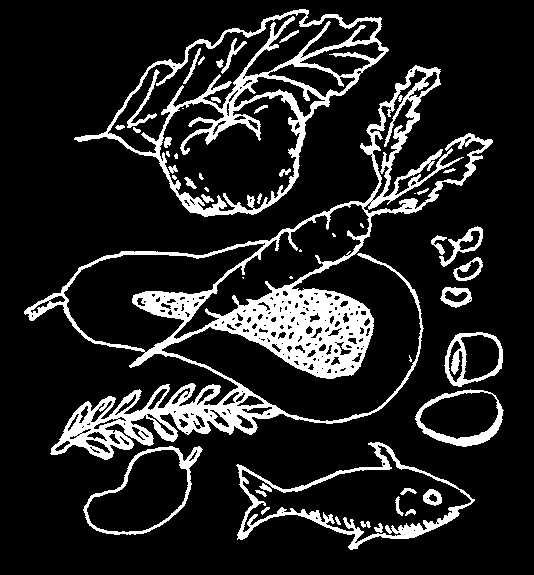
NIGHT BLINDNESS AND XEROPHTHALMIA (VITAMIN A DEFICIENCY)
This eye disease is most common in children between
1 and 5 years of age. It comes from not eating enough foods with vitamin A. If not recognized and treated early, it can make the child blind.
Signs:
• At first, the child may have night blindness.
He cannot see as well in the dark as other people can.
• Later, he develops dry eyes
(xerophthalmia). The white of the eyes loses its shine and begins to wrinkle.
• Patches of little gray bubbles (Bitot’s spots)
may form in the eyes.
• As the disease gets worse, the cornea also becomes dry and dull, and may develop little pits.
• Then the cornea may quickly grow soft, bulge, or even burst. Usually there is no pain.
Blindness may result from infection, scarring, or other damage.
• Xerophthalmia often begins, or gets worse, when a child is sick with another illness like diarrhea, whooping cough, tuberculosis, or measles. Examine the eyes of all sick and underweight children. Open the child’s eyes and look for signs of vitamin A deficiency.
Prevention and treatment:
Xerophthalmia can easily be prevented by eating foods that have vitamin A.
Do the following:
♦ Breastfeed the baby—up to 2 years, if possible.
♦ After the first 6 months, begin giving the child foods rich in vitamin A, such as dark green leafy vegetables, and yellow or orange fruits and vegetables such as papaya (paw paw), mango, and squash. Whole milk, eggs, and liver are also rich in vitamin A.
♦ If the child is not likely to get these foods, or if he is developing signs of night blindness or xerophthalmia, give him vitamin A. 200,000 units
(60 mg. retinol, in capsule or liquid) once every
6 months (p. 391). Babies under 1 year of age should get 100,000 units.

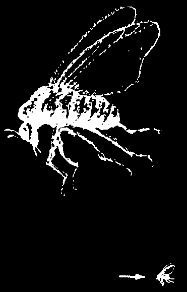
♦ If the condition is already fairly severe, give the child 200,000 units of vitamin A by mouth the first day. 200,000 units the second day, and 200,000 units 14 days later. Babies under 1 year old should get half that amount (100,000 units).
♦ In communities where xerophthalmia is common, give 200,000 units of vitamin
A once every 6 months to women who are breastfeeding, and also to pregnant women during the second half of their pregnancy.
WARNING: Too much vitamin A is poisonous. Do not give more than the amounts advised here.
If the condition of the child’s eye is severe, with a dull, pitted, or bulging cornea, get medical help. The child’s eye should be bandaged, and he should receive vitamin A at once, preferably an injection of 100,000 units in the muscle.
Dark green leafy vegetables, and yellow or orange fruits and vegetables, help prevent blindness in children.
SPOTS OR 'FLIES’ BEFORE THE EYES (MOUCHES VOLANTES)
Sometimes older persons complain of small moving spots when they look at a bright surface (wall, sky). The spots move when the eyes move and look like tiny flies. These spots are usually harmless and need no treatment. But if they appear suddenly in large numbers and vision begins to fail from one side, this could be a medical emergency (detached retina). Seek medical help at once.
DOUBLE VISION
Seeing double can have many causes.
If double vision comes suddenly, is chronic, or gradually gets worse, it is probably a sign of a serious problem. Seek medical help.
If double vision occurs only from time to time, it may be a sign of weakness or exhaustion, perhaps from malnutrition. Read Chapter 11 on good nutrition and try to eat as well as possible. If sight does not improve, get medical help.
RIVER BLINDNESS (ONCHOCERCIASIS)
This disease is common in many parts of Africa and certain areas of southern Mexico, Central America, and northern South
America. The infection is caused by tiny worms that are carried from person to person by small, hump backed flies or gnats known as black flies (simulids).
BLACK FLY
The worms are 'injected’ into a person when an infected black fly bites him.
actual size
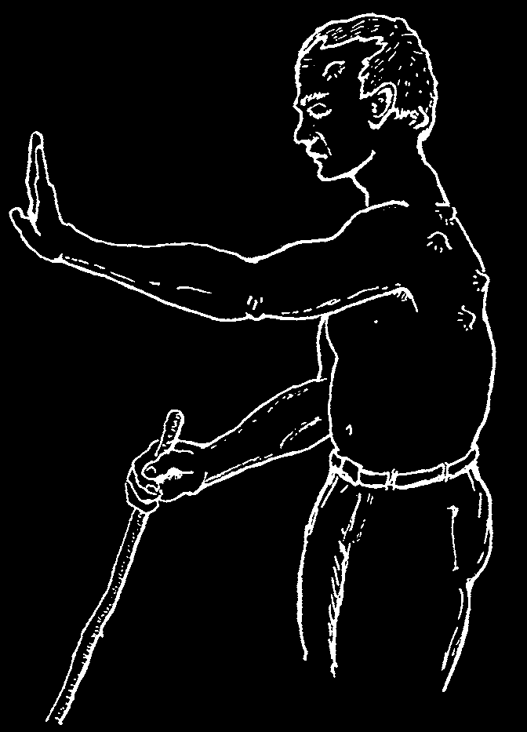
Signs of river blindness:
• Several months after a black fly bites and the worms enter the body, lumps begin to form under the skin. In the Americas the lumps are most common on the head and upper body; in
Africa on the chest, the lower body, and thighs.
Often there are no more than 3 to 6 lumps. They grow slowly to a size of 2 to 3 cm. across. They are usually painless.
• There may be itching when the baby worms are spreading.
• Pains in the back, shoulder or hip joints, or
'general pains all over’.
• Enlargement of the lymph nodes in the groin.
• Thickening of the skin on the back or belly, with big pores like the skin of an orange. To see this, look at the skin with light shining across it from one side.
• If the disease is not treated, the skin gradually becomes more wrinkled, like an old man’s. White spots and patches may appear on the front of the lower legs. A dry rash may appear on the lower limbs and trunk.
• Eye problems often lead to blindness. First there may be redness and tears, then signs of iritis (p. 221). The cornea becomes dull and pitted as in xerophthalmia
(p. 226). Finally, sight is lost because of corneal scarring, cataract, glaucoma, or other problems.
Treatment of river blindness:
Early treatment can prevent blindness. In areas where river blindness is known to occur, seek medical testing and treatment when the first signs appear.
♦ Ivermectin (Mectizan) is the best medicine for river blindness, and it may be available at no cost through your local health department. Diethylcarbamazine and suramin are other medicines used to treat river blindness, but these can sometimes do more harm than good, especially when eye damage has already begun. They should only be given by experienced health workers. For dosage and precautions on all these medicines, see p. 377.
♦ Antihistamines help reduce itching (p. 385).
♦ Early surgical removal of the lumps lowers the number of worms.
Prevention:
♦ Black flies breed in fast-running water. Clearing brush and vegetation back from the banks of fast-running streams may help reduce the number.
♦ Avoid sleeping out-of-doors—especially in the daytime, which is when the flies usually bite.
♦ Cooperate with programs for the control of black flies.
♦ Early treatment prevents blindness and reduces spread of the disease.
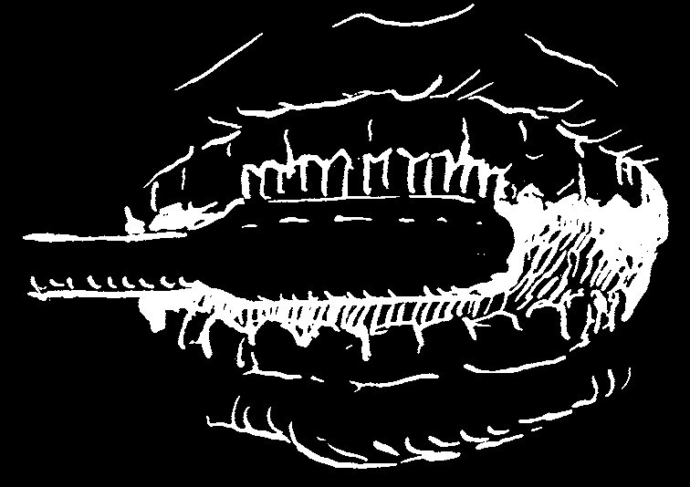
CHAPTER
The Teeth,
Gums, and Mouth
CARE OF THE TEETH AND GUMS
Taking good care of teeth and gums is important because:
• Strong, healthy teeth are needed to chew and digest food well.
• Painful cavities (holes in the teeth caused by decay) and sore gums can be prevented by good tooth care.
• Decayed or rotten teeth caused by lack of cleanliness can lead to serious infections that may affect other parts of the body.
To keep the teeth and gums healthy:
“This child has a sweet tooth—
1. Avoid sweets. Eating a lot of sweets (sugar but soon he’ll cane, candy, pastry, tea or coffee with sugar, soft have no more”
or fizzy drinks like colas) rots the teeth quickly.
(no more teeth).
Do not accustom children to sweets or soft drinks if you want them to have good teeth.
2. Brush teeth well every day—and always brush immediately after eating anything sweet. Start brushing your children’s teeth as the teeth appear. Later, teach them to brush their teeth themselves, and watch to see that they do it right.
Brush the teeth from top to bottom like this, not just from side to side.
Brush the front, back, top, and bottom of all teeth.
3. In areas where there is not enough natural fluoride in water and foods, putting fluoride in the drinking water or directly on teeth helps prevent cavities. Some health programs put fluoride on children’s teeth once or twice a year. Also, most foods from the sea contain a large amount of fluoride.
CAUTION: Fluoride is poisonous if more than a small amount is swallowed. Use with care and keep it out of the reach of children. Before adding fluoride to drinking water, try to get the water tested to see how much fluoride is needed.


4. Do not bottle feed older babies. Continual sucking on a bottle bathes the baby’s teeth in sweet liquid and causes early decay. (It is best not to bottle feed at all.
See p. 271.)
A TOOTHBRUSH IS NOT NECESSARY
You can use the twig of a tree, like this:
Sharpen this end to clean
Chew on this end and use between the teeth.
the fibers as a brush.
Or tie a piece of rough towel around the end of a stick or wrap it around your finger, and use it as a toothbrush.
piece of rough towel
TOOTHPASTE IS NOT NECESSARY
Just water is enough, if you rub well. Rubbing the teeth and gums with something soft but a little rough is what cleans them. Some people rub their teeth with powdered charcoal or with salt. Or you can make a tooth powder by mixing salt and bicarbonate of soda (baking soda) in equal amounts. To make it stick, wet the brush before putting it in the powder.
salt bicarbonate of soda
IF A TOOTH ALREADY HAS A CAVITY (a hole caused by rot)
To keep it from hurting as much or forming an abscess, avoid sweet things and brush well after every meal.
If possible, see a dental worker right away, if you go soon enough, he can often clean and fill the tooth so it will last for many years.
When you have a tooth with a cavity, do not wait until it hurts a lot.
Have it filled by a dental worker right away.
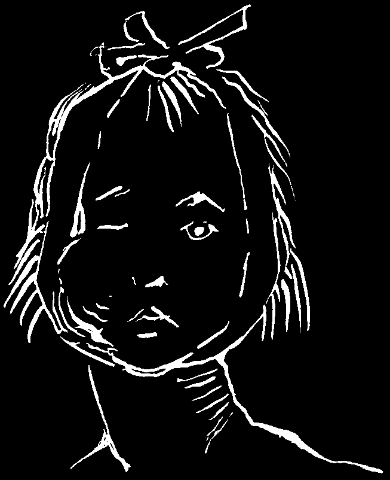
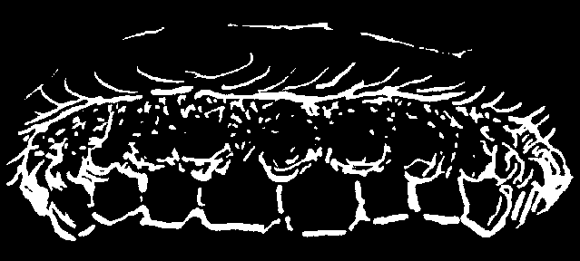
TOOTHACHES AND ABSCESSES
To calm the pain:
♦ Clean the hole in the tooth wall, removing all food particles. Then rinse the mouth with warm salt water.
♦ Take a pain medicine like aspirin.
♦ If the tooth infection is severe (swelling, pus, large tender lymph nodes), use an antibiotic: tablets of penicillin (p. 351), amoxicillin, or ampicillin (p. 352). People allergic to medicines in the penicillin family can take erythromycin (p. 354).
If the pain and swelling do not go away or keep coming back, the tooth should probably be pulled.
A toothache results when a cavity becomes infected.
Treat abscesses right away—before the
An abscess results when the infection spreads to other parts of the body.
infection reaches the tip of a root and forms a pocket of pus.
AN INFECTION OF THE GUMS (PYORRHEA)
Inflamed (red and swollen), painful gums that bleed easily are caused by:
1. Not cleaning the teeth and gums well or often enough.
2. Not eating enough nutritious foods
(malnutrition).
Prevention and treatment:
♦ Brush teeth well after each meal, removing food that sticks between the teeth.
Also, if possible, scrape off the dark yellow crust (tartar) that forms where the teeth meet the gums. It helps to clean under the gums regularly by passing a strong thin thread (or dental floss) between the teeth. At first this will cause a lot of bleeding, but soon the gums will be healthier and bleed less.
♦ Eat protective foods rich in vitamins, especially eggs, meat, beans, dark green vegetables, and fruits like oranges, lemons, and tomatoes (see Chapter 11).
Avoid sweet, sticky, and stringy foods that get stuck between the teeth.
Note: Sometimes medicines for seizures (epilepsy), such as phenytoin (Dilantin), cause swelling and unhealthy growth of the gums (see p. 389). If this happens, consult a health worker and consider using a different medicine.
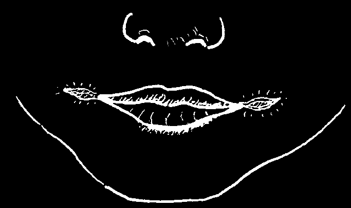

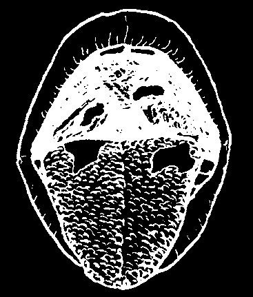

SORES OR CRACKS AT THE CORNERS OF THE MOUTH
Narrow sores at the corners of children’s mouths are often a sign of malnutrition.
Children with these sores should eat foods rich in vitamins and proteins: like milk, meat, fish, nuts, eggs, fruits, and green vegetables.
WHITE PATCHES OR SPOTS IN THE MOUTH
The tongue is coated with white 'fur’. Many illnesses cause a white or yellowish coating on the tongue and roof of the mouth. This is common when there is a fever. Although this coating is not serious, it helps to rinse the mouth with a solution of warm water with salt and bicarbonate of soda several times a day.
Tiny white spots, like salt grains, in the mouth of a child with fever may be an early sign of measles (p. 311).
Thrush: small white patches on the inside of the mouth and tongue that look like milk curds stuck to raw meat. They are caused by a fungus or yeast infection called moniliasis
(see p. 242). Thrush is common in newborn babies, in persons with HIV, and in persons using certain antibiotics, especially tetracycline or ampicillin.
Unless it is very important to keep taking the antibiotic, stop taking it. Use nystatin (p. 372) or paint the inside of the mouth with gentian violet. Eating yogurt may also help.
In very severe cases, or if thrush moves into the throat and makes it hard to swallow, consult a health worker. A stronger medicine may be needed.
Canker sores: small, white, painful spots inside the lip or mouth. May appear after fever or stress (worry). In
1 to 3 weeks they go away. Rinse mouth with salt water.
Antibiotics do not help.
COLD SORES AND FEVER BLISTERS
Small painful blisters on lips (or genitals) that break and form scabs. May appear after fever or stress. Caused by a herpes virus. They heal after 1 or 2 weeks. Holding ice on the sores for several minutes, several times a day may help them to heal faster.
Putting alum, camphor, or bitter plant juices (such as Cardon cactus, p. 13) on them may help. Taking acyclovir (p. 373) can make cold sores less painful. For information about herpes on the genitals, see p. 402.
For more information on caring for the teeth and gums, see Where There Is No
Dentist, also available from Hesperian.

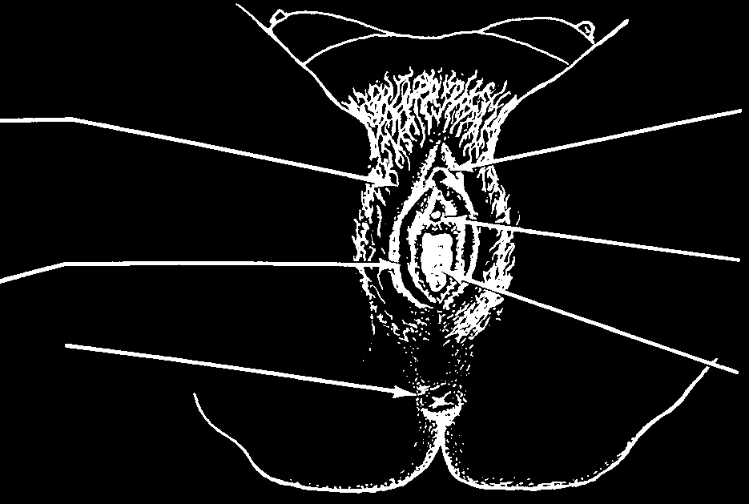

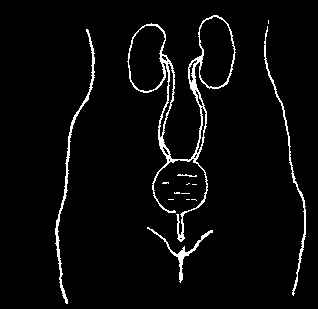

The Urinary System and the Genitals
CHAPTER
The urinary system or tract serves the body by removing waste material from the blood and getting rid of it in the form of urine:
The kidneys
The bladder is a bag that stores the filter the urine. As it fills, it stretches and gets blood and bigger.
form the urine.
The urine tube or urinary canal
The ureters
(urethra) carries are tubes urine out through that carry the penis in men or urine to the to a small opening bladder.
between the lips of the vagina in women.
The genitals are the sex organs.
The man:
bladder sperm tube urine canal
The prostate gland makes the liquid that carries the sperm.
penis or male sex
The testicles make the organ sperm, or microscopic cells with tails that join scrotum or with the egg of a woman sac that holds and make her pregnant.
the testicles
The woman:
clitoris: a very sensitive outer lips spot that can give of the sexual pleasure when vagina touched inner lips urinary opening: hole where urine comes out anus: end of the intestine opening to the vagina or birth canal. (For inside view, see p. 280.)

PROBLEMS OF THE URINARY TRACT
There are many different problems of the urinary tract. They are not always easy to tell apart. And the same illness can show itself differently in men and women. Some of these problems are not serious, while others can be very dangerous. A dangerous illness may begin with only mild signs. It is often difficult to identify these problems correctly by simply using a book like this one. Special knowledge and tests may be needed. When possible, seek advice from a health worker.
Common problems with urinating include:
1. Urinary tract infections. These are most common in women. (Sometimes they start after sexual contact, but may come at other times, especially during pregnancy.)
2. Kidney stones, or bladder stones.
3. Prostate trouble (difficulty passing urine caused by an enlarged prostate gland;
most common in older men).
4. Gonorrhea or chlamydia (infectious diseases spread by sexual contact that often cause difficulty or pain in passing urine).
5. In some parts of the world schistosomiasis (blood flukes) is the most common cause of blood in the urine. This is discussed with other worm infections. See page 146.
Urinary Tract Infections
• Sometimes it feels
Signs:
as though the bladder does not
• Sometimes fever and chills empty completely.
or headache.
• Sometimes pain in the side.
• Painful urination
• Sometimes there and need to urinate is pain in the lower very often.
back (kidneys).
• Unable to hold in urine
• Sometimes the pain
(especially true for seems to go down children).
the legs.
• Urine may be
• In serious cases cloudy or reddish
(kidney disease) the
(bloody).
feet and face may swell.

Many women suffer from urinary infections. In men they are much less common.
Sometimes the only symptoms are painful urination and the need to urinate often.
Other common signs are blood in the urine and pain in the lower belly. Pain in the mid or lower back, often spreading around the sides below the ribs, with fever, indicates a more serious problem.
Treatment:
♦ Drink a lot of water. Many minor urinary infections can be cured by simply drinking a lot of water, without the need for medicine. Drink at least 1 glass every 30 minutes for 3 to 4 hours, and get into the habit of drinking lots of water.
(But if the person cannot urinate or has swelling of the hands and face, she should not drink much water.)
♦ If the person does not get better by drinking a lot of water, or if she has a fever, she should take cotrimoxazole (p. 357) or amoxicillin (p. 352). Pay careful attention to dosage and precautions. To completely control the infection it may be necessary to take the medicine for 10 days. If the infection moves into the kidneys or if these medicines do not work, try ciprofloxacin (p. 358). It is important to drink a lot of water while taking these medicines.
♦ If the person does not get better quickly, seek medical advice.
Kidney or Bladder Stones
Signs:
• The first sign is often sharp or severe pain in the lower back, the side, or the lower belly, or in the base of the penis in men.
• Sometimes the urinary tube is blocked so the person has difficulty passing urine—or cannot pass any. Or drops of blood may come out when the person begins to urinate.
• There may be a urinary infection at the same time.
Treatment:
♦ The same as for the urinary infections described above.
♦ Also give aspirin or another painkiller and an antispasmodic (see p. 380).
♦ If you cannot pass urine, try to do it lying down. This sometimes allows a stone in the bladder to roll back and free the opening to the urinary tube.
♦ In severe cases, get medical help. Sometimes surgery is needed.
Enlarged Prostate Gland
This condition is most common in men over 40 years old. It is caused by a swelling of the prostate gland, which is between the bladder and the urinary tube
(urethra).
• The person has difficulty in passing urine and sometimes in having a bowel movement. The urine may only dribble or drip or become blocked completely.
Sometimes the man is not able to urinate for days.
• If he has a fever, this is a sign that infection is also present.
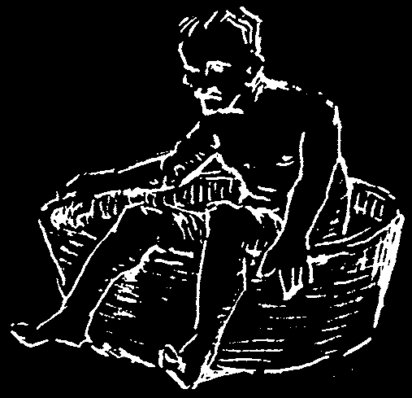
Treatment for an enlarged prostate:
♦ If the person cannot urinate, he should try sitting in a tub of hot water, like this:
If this does not work, a catheter may be needed (p. 239).
♦ If he has a fever, use an antibiotic such as ampicillin (p. 352) or tetracycline (p. 355).
♦ Get medical help. Serious or chronic cases may require surgery.
Note: Both prostate trouble and gonorrhea (or chlamydia) can also make it hard to pass urine. In older men it is more likely to be an enlarged prostate. However, a younger man—especially one who has recently had sex with a person with gonorrhea or chlamydia—probably has gonorrhea or chlamydia.
INFECTIONS SPREAD BY SEX (SEXUALLY TRANSMITTED INFECTIONS)
On the following pages, we discuss some common infections spread by sexual contact (STIs): gonorrhea, chlamydia, syphilis, and bubos. For information on HIV and
AIDS and some sexually transmitted infections that cause sores on the genitals (genital herpes, genital warts, and chancroid) see Additional Information, p. 399 to 403.
Gonorrhea (clap, VD, the drip) and Chlamydia
Both men and women can have gonorrhea or chlamydia without any signs.
Gonorrhea and chlamydia can have the same signs, though gonorrhea usually starts sooner and is more painful. Both men and women can have gonorrhea and chlamydia at the same time so it is best to treat for both. If not treated, either gonorrhea or chlamydia can make a man or a woman sterile (unable to have a baby).
If a pregnant woman with gonorrhea or chlamydia is not treated before giving birth, the infection may get in the baby’s eyes and make him blind (see p. 221).
Signs in the man:
• Drops of pus from the penis
• Sometimes there is painful swelling of the testicles
Signs in both the man and the woman:
Signs in the woman:
• Pain or burning during
• Yellow or green discharge urination (peeing)
from the vagina or anus
• Rash or sores all over the body
• Pain in the lower belly (pelvic
• Painful swelling in one or both inflammatory disease, p. 243)
knees, ankles, or wrists
• Fever
• Pain during sex


In a man, the first signs begin 2 to 5 days (or up to 3 weeks or more) after sexual contact with an infected person. In a woman, signs may not show up for weeks or months. But a person who does not show any signs can still give the disease to someone else, starting a few days after becoming infected.
Treatment:
♦ In the past, gonorrhea was usually treated with penicillin. But now in many areas the disease has become resistant to penicillin, so other antibiotics must be used. It is best to seek local advice about which medicines are effective, available, and affordable in your area. Medicines used to treat gonorrhea and chlamydia are listed on p. 359. If the drip and pain have not gone away in
2 or 3 days after trying a treatment, the gonorrhea could be resistant to the medicine, or the person could have chlamydia.
♦ If a woman has gonorrhea or chlamydia and also has fever and pain in the lower belly, she may have pelvic inflammatory disease (see p. 243).
♦ Everyone who has had sex with a person known to have gonorrhea or chlamydia should also be treated, especially wives of men who are infected.
Even if the wife shows no signs, she is probably infected. If she is not treated at the same time, she will give the disease back to her husband again.
♦ Protect the eyes of all newborn babies from chlamydia and especially gonorrhea, which can cause blindness (see p. 221).
CAUTION: A person with gonorrhea or chlamydia may also have syphilis without knowing it. Sometimes it is best to go ahead and give the full treatment for syphilis, because the gonorrhea or chlamydia treatment may prevent the first syphilis symptoms, but may not cure the disease.
For prevention of these and other sexually transmitted infections, see p. 239.
Syphilis
Syphilis is a common and dangerous infection that is spread from person to person through sexual contact.
Signs:
• The first sign is usually a sore, called a chancre.
It appears 2 to 5 weeks after sexual contact with a person who has syphilis. The chancre may look like a pimple, a blister, or an open sore. It usually appears in the genital area of the man or woman (or less commonly on the lips, fingers, anus, or mouth).
This sore is full of germs, which are easily passed on to another person. The sore is usually painless, and if it is inside the vagina, a woman may not know she has it but it can easily spread to other people. If the sore is painful, it may be chancroid (see p. 403).
• The sore lasts only a few days and then goes away by itself without treatment. But the disease continues spreading through the body.
(continued on the next page)


• Weeks or months later, there may be sore throat, mild fever, mouth sores, or swollen joints. Or any of these signs may appear on the skin:
a painful rash or 'pimples’
ring-shaped welts an itchy rash on the all over the body
(like hives)
hands or feet
All of these signs usually go away by themselves, making the person think he is well— but the disease continues. Without adequate treatment, syphilis can invade any part of the body, causing heart disease, paralysis, insanity, and many other problems.
Note: Yaws shares many of the same signs as syphilis (see p. 202).
CAUTION: If any strange rash or skin condition shows up days or weeks after a pimple or sore appears on the genitals, it may be syphilis. Get medical advice.
Treatment for syphilis: (For complete cure, the full treatment is essential.)
♦ If signs have been present less than 1 year, inject 2.4 million units of benzathine penicillin all at once, half the dose in each buttock (see p. 352). If allergic to penicillin, take tetracycline or erythromycin by mouth, 500 mg., 4 times a day for 15 days.
♦ If signs have been present more than 1 year, inject 2.4 million units of benzathine penicillin—half in each buttock—once a week for 3 weeks, for a total of 7.2 million units. If allergic to penicillin, take either tetracycline or erythromycin, 500 mg., 4 times each day for 30 days.
♦ If there is any chance that someone has syphilis, she should immediately see a health worker. Special blood tests may be needed. If tests cannot be made, the person should be treated for syphilis in any case.
♦ Everyone who has had sexual contact with a person known to have syphilis should also be treated, especially husbands or wives of those known to be infected.
Note: Pregnant or breastfeeding women who are allergic to penicillin can take erythromycin in the same dosage as tetracycline (see p. 355).
To prevent syphilis, see the next page.
Bubos: Bursting Lymph Nodes in the Groin
(Lymphogranuloma Venereum)
Signs:
• In a man: Large, dark lumps in the groin that open to drain pus, scar up, and open again.
• In a woman: Lymph nodes similar to those in the man. Or painful, oozing sores in the anus.
Treatment:
♦ See a health worker.
♦ Give adults 500 mg. of erythromycin, 4 times a day for 14 to 21 days. Or give doxycycline, 100 mg., 2 times a day for 14 to 21 days.
♦ Avoid sex until the sores are completely healed.
Note: Bubos in the groin can also be a sign of chancroid (see p. 403).

HOW TO PREVENT SPREADING SEXUALLY TRANSMITTED INFECTIONS
1. Be careful with whom you have sex: Someone who has sex with many different persons is more likely to catch these infections. That is why prostitutes are more likely to get an infection and then pass it on. To avoid infection, always use a condom or have sex with only one faithful partner.
2. Get treatment right away: It is very important that all persons infected with a sexually transmitted infection get treatment at once so that they do not infect other people. Having one STI also makes it easier to become infected with HIV or other STIs. Do not have sex with anyone until 3 days after treatment is finished.
(Unfortunately there is still no cure for HIV. See p. 397.)
3. Tell other people if they need treatment: When a person finds out that he or she has a sexually transmitted infection, he should tell everyone with whom he has had sex, so that they can get treatment, too. It is especially important that a man tell a woman, because without knowing she has the disease she can pass it on to other people, her babies may become infected or blind, and in time she may become sterile or very ill herself.
4. Help others: Insist that friends who may have a sexually transmitted infection get treatment at once, and that they avoid all sexual contact until they are cured.
HOW AND WHEN TO USE A CATHETER
(A RUBBER TUBE TO DRAIN URINE FROM THE BLADDER)
When to use and when not to use a catheter:
• Never use a catheter unless it is absolutely necessary and it is impossible to get medical help in time. Even careful use of a catheter sometimes causes dangerous infection or damages the urinary canal.
• If any urine is coming out at all, do not use the catheter.
• If the person cannot urinate, first have him try to urinate while sitting in a tub of warm water (p. 236). Begin the recommended medicine (for gonorrhea or prostate trouble) at once.
• If the person has a very full, painful bladder and cannot urinate, or if he or she begins to show signs of poisoning from urine, then and only then use a catheter.
Signs of urine poisoning (uremia):
• The breath smells like urine.
• The feet and face swell.
• Vomiting, distress, confusion.
Note: People who have suffered from difficulty urinating, enlarged prostate, or kidney stones should buy a catheter and keep it handy in case of emergency.


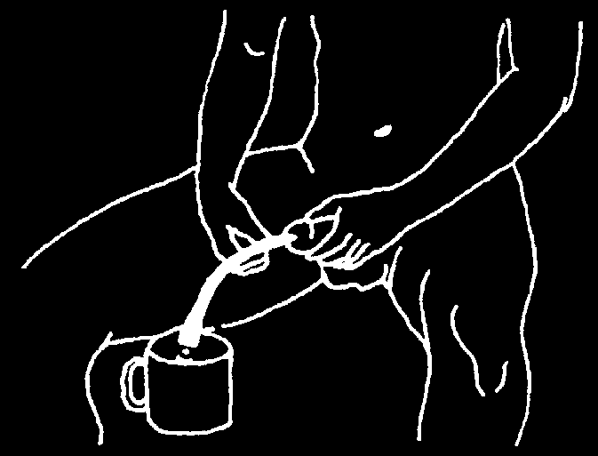